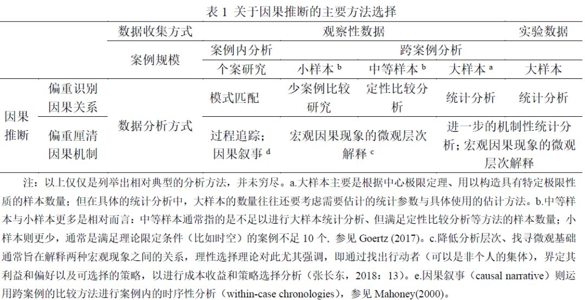
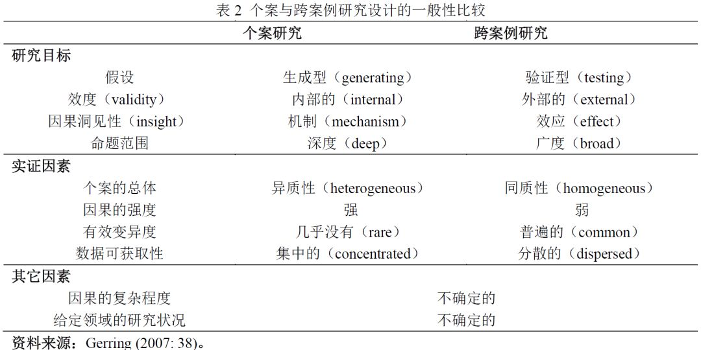
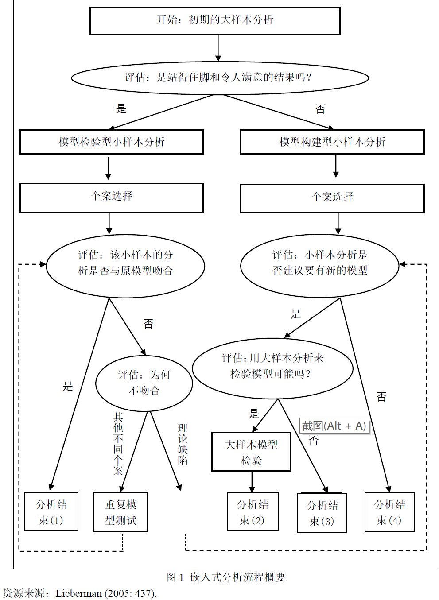
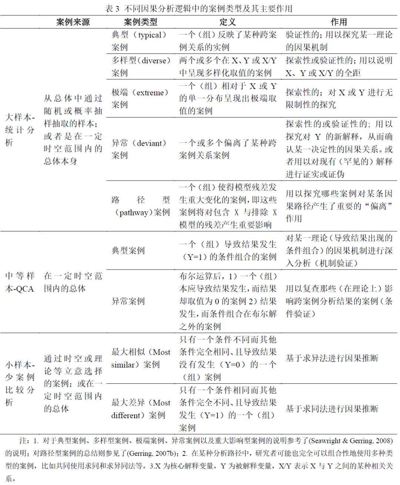
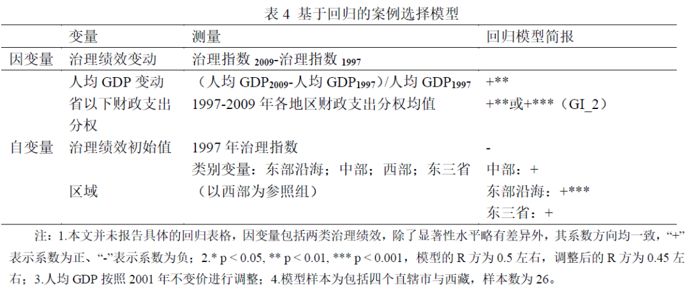
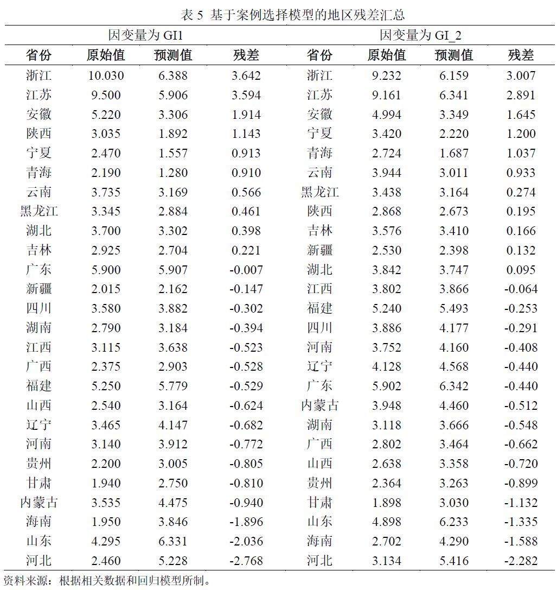
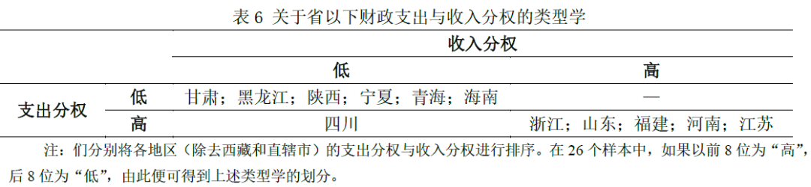
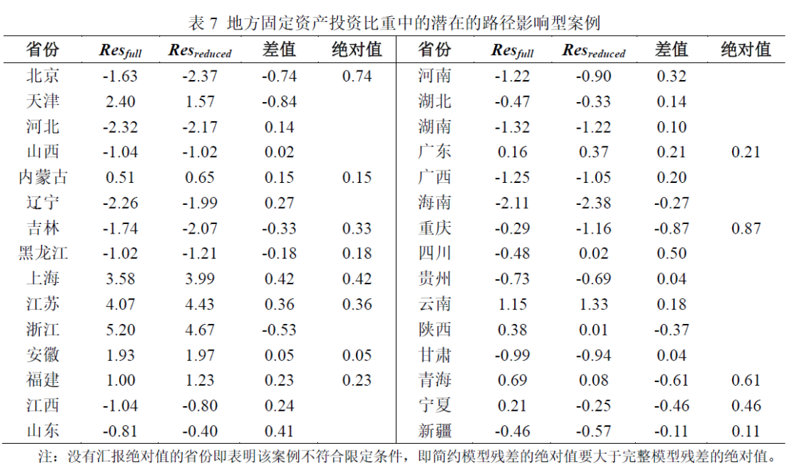
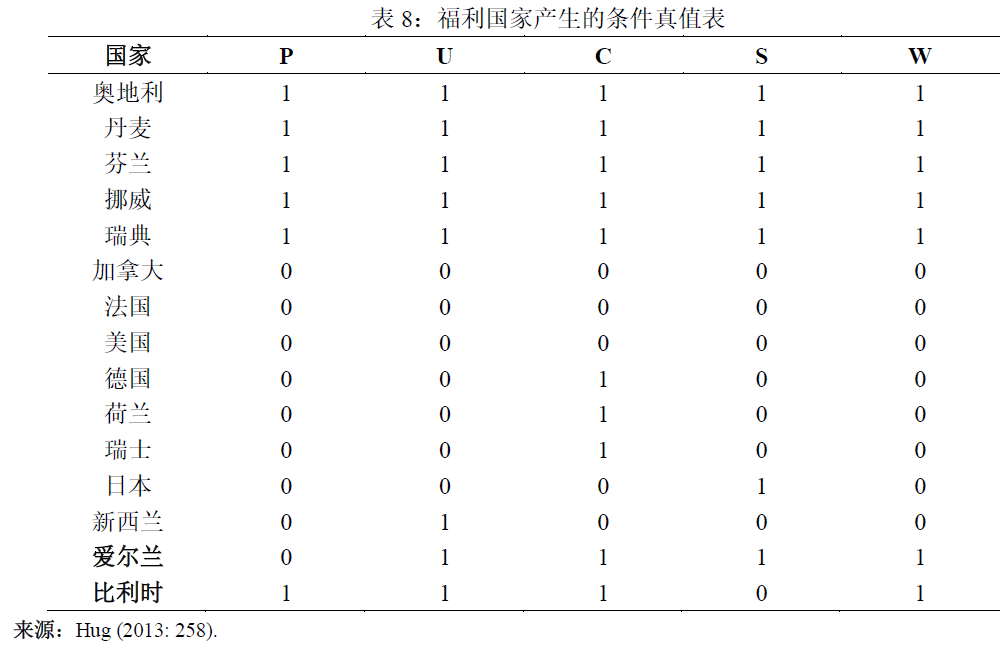
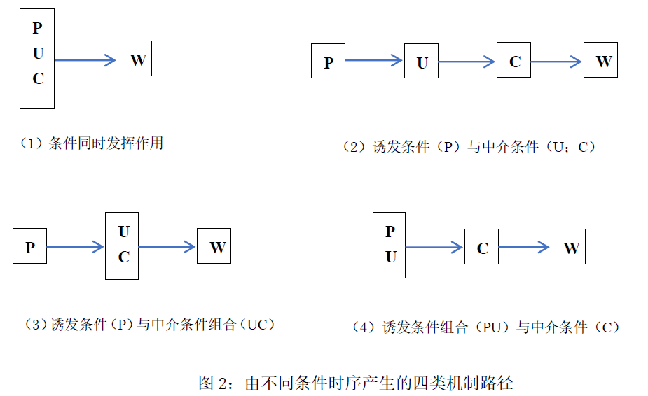

收录于合集
文献来源：游宇、陈超.比较的“技艺”：多元方法研究中的案例选择[J].经济社会体制比较，2020(2):67-78。
作者简介：游宇，重庆大学公共管理学院讲师；陈超，上海交通大学国际与公共事务学院副教授。
摘 要
随着各种分析技术的发展与各学科之间的整合，多元方法研究逐渐受到重视。本文主要探讨，在多元方法研究中，应当如何根据相应的目标来选择合适的（一组）案例。本文认为，不同的因果分析路径——变量导向的量化相关与案例导向的逻辑因果，将在很大程度上影响后续的案例选择策略。前者在大样本统计分析之后，可以通过选择典型案例、异常案例以及路径型案例等来进行后续的机制分析；后者则在定性比较分析之后，通过选择典型案例以实现因果逻辑的完整性，或通过选取异常案例来实现因果逻辑的一致性。通过研究实例，本文针对以上不同的案例选择策略进行了具体讨论。本文的分析说明，只有通过对跨案例研究与案例内分析在认识论与方法论上的正确衔接，研究者才更有可能充分挖掘多元方法研究在因果推断中的巨大潜力。
关键词： 多元方法研究；案例选择；因果机制；跨案例分析；案例内分析
一、导言
因果推断与实证导向的理论建构是社会科学研究的核心任务(Druckman et al., 2006)。由于因果关系的本质和形态是多元的，因而建构与理解因果关系的逻辑往往也存在不同程度的差异(左才，2017)。无论是哪一种因果逻辑，完整的因果分析过程往往包含两大紧密相关的部分：探寻因果关系（causal relationship）与厘清因果机制（causal mechanism）。
整体而言，在实证主义基础与多案例分析的背景下，我们大致可以区分出三种主要的因果分析路径。其一是传统的少案例比较研究：其以密尔(Mill, 1884)在《逻辑学体系》中对求同法与求异法的经典论述为基础，并选取合适的案例进行以因果论证(Lijphart, 1971; Przeworski & Teune, 1970)。第二种是对中等样本的定性比较分析（the Qualitative Comparative Analysis, 以下简称QCA）——沿着查尔斯·拉金(Ragin, 1987, 2008)所建立的案例导向的研究思路，以及对加里·金等(King et al., 1994)完全以量化逻辑指导社科研究设计的争论与反思，方法论学者逐渐建立起一种以布尔代数（Boolean algebra）和集理论（Set Theory）为基础，以挖掘充分-必要条件组合为目的的方法论体系。第三条路径则是以变量为导向的大样本统计分析，目前主要基于反事实框架（the counterfactual framework）进行因果推断(Holland, 1986; Morgan & Winship, 2007)。
遵循上述分类，表1对其中的典型方法进行了基本总结。在跨案例的实证研究中，探寻因果关系往往需要依靠大样本的统计分析，从而估计自变量（X）与因变量（Y）之间的边际变化是否存在显著的系统性共变(King et al., 1994: 76–85)。然而，在样本规模不足的情况下，则可以对案例的条件组合（configurations of conditions）进行定性比较分析(Ragin, 1987)，或者通过求同和求异法进行少案例比较研究（small-n comparative methods）(Lieberman, 1991)。此外，个案研究也可以通过模式匹配（pattern matching）的分析逻辑对现有理论提供关键的支持性证据或进行证伪(Mahoney, 2000)。而因果机制对理论的重大意义在于回答，X是如何影响Y的，其方法也更为多元。[6]而且，相对于行为主义兴起初期多数研究者对因果效应的偏重，进入新世纪以来，以凸显因果机制重要性的“机制世界观”（mechanism worldview）日益得到政治科学乃至整个实证社会科学的重视(Gerring, 2008)。

通常而言，虽然估计因果效应与厘清因果机制各有侧重，但多数社会科学研究者并没有把二者对立起来（张长东，2018）。相反，这反而对经验研究（尤其是量化研究）提出了更高的要求，即一项论证严谨且充分的研究往往需要对二者均进行充分的讨论。在此背景下，多元方法研究（the Multi-Method Research, MMR）的出现在一定程度上是为了更好地完成上述目标：不同方法各有所长，如何取长补短便值得慎重思考。因此，这一研究路径要求在研究设计中包含至少两种方法论传统的数据收集与分析技术，比如包含问卷数据的实验室实验，将焦点访谈嵌入参与式观察之中，以及对质性文本语料库的统计分析等等。
相应地，多元方法研究的哲学基础并非实证主义或阐释主义，而是实用主义的世界观（Pragmatist Worldview）：聚焦于研究的结果，偏重于研究问题而非方法，以解决研究困难为核心要务(Creswell & Clark, 2011: 41)。基于此，多元方法研究的基本原则便是将跨案例因果推断（cross-case causal inference）与案例内因果推断（within-case causal inference）“融为一体”，核心任务则是通过多元方法以形成因果分析的基础(Goertz, 2017: 5)。因此，在特定的多元方法研究中，基于特定目标的案例选择往往起到了承上启下的关键作用。换言之，对于链接了跨案例与案例内分析的特定研究设计，其“链接”的正当性与解释效度往往取决于如何选择案例。
本文的核心任务意在探讨，在多元方法研究中，我们应当如何根据相应的目标来选择合适的个案或一组案例，以进行后续的案例内分析。在引言部分后，我们将主要分析：个案研究在多元方法研究设计中的主要作用，以及不同的跨案例分析路径和目标将会如何影响后续的个案选择。在第四和第五部分，我们会分别通过实例具体讨论：大样本统计分析后的基于回归的案例选择技艺，以及定性比较分析之后的基于逻辑因果的案例选择技艺。最后一部分为总结与进一步的讨论。
二、多元方法研究设计中的个案研究
与案例选择 ****
在探讨案例选择的策略之前，我们还需要探讨三个问题：多元方法研究的核心目标是什么？基于立意选择的个案研究或案例内分析在其中的主要作用是什么？以及，相对于案例规模不同的因果分析路径，我们可以选择哪些类型的案例以完成核心的研究目标？接下来，我们将分为两个部分来探讨以上的问题：前一部分集中于前两个问题的分析，后一部分则聚焦于第三个问题的讨论。
（一）多元方法研究设计中的个案研究及其主要作用
自从上世纪60-70年代以来，随着计算能力、数据库建设、统计方法与软件以及形式模型的发展与应用，社会科学研究也逐渐进入跨学科整合与多元方法研究的新阶段。部分研究者也不再拘泥于不同研究方法在本体论与认识论上的“冲突”，而尝试将这些方法纳入整合性的研究设计之中，取各自所长以完成相应分析任务，从而完成某一核心的因果推断目标。
因此，多元方法研究设计的主要特征在于将多种方法“集成化”（integration），而非三角校正（triangulation）。前者主要考量的是所采用的每一种方法的优劣何在，并通过其它的方法来检验、修正或支持核心假设，从而最小化这一方法在因果推断中的弱点；而后者的核心目标则是，通过使用两种（或更多）不同的方法，检验两种方法得出的结论是否存在显著差异(Goertz, 2017: 4–9)。
在明确多元方法研究的主要特征之后，我们还需要限定本文的讨论“边界”。由于本文主要探讨的是非随机化案例选择策略，故而，我们关注的多元方法研究是，如何结合多案例分析与案例内分析、且以跨案例分析在先的设计类型。如表2所示，跨案例研究与个案研究的目标与作用差异较大。前者一般旨在进行理论验证、估计因果效应。而质性研究层面的案例分析则通常是通过生成新的解释性假说去回答探索性的问题，或者深度讨论特定条件下的因果机制及其连带现象(Bennett & George, 2005)。因而，案例分析的主要目标也“不仅是讲故事或展示数据，而是力求通过这些具体信息，挖出对一些基本关系类别、基本特征表象、基本行为范型的认识”，即“通过讲故事发现这些知识（而非讲故事本身），是社会科学案例分析的基本目标”(张静, 2018: 128-129)。

就此而言，案例分析不仅可以通过对单个或少数分析单元的深入研究，以理解规模更为庞大的相似的（或相反的）分析单元或案例(Gerring, 2007a: 37)，还可以为跨案例分析中的相应关系提供潜在的机制解释(Gerring, 2004)。基于此，这一研究设计的基本思路便是：在初步明确某种现象或变量之间的关系之后，再选择符合特定目标的案例进行深入分析以完成因果推断的目标。正如杰森·西奈特(Seawright, 2016: 70–71)所强调的那样，“只有将个案研究整合进统计建模之中，整合性的多元方法研究的全部潜力才能得以实现：在一开始运用推断性统计分析以检验核心假设的研究者，同样应当重视如何将案例研究整合为更为系统性与扩展性的研究设计”。
埃文·利伯曼(Lieberman, 2005)所倡导的嵌入式分析设计在很大程度上符合这一思路（见图1）。这一研究设计类型包括了初期的大样本分析和对其结果的稳健性评估：如果模型是良好的并且结果是站得住脚的，那么就进入“模型检验型小样本分析”；否则进入“模型构建型小样本分析”；在每个案例中，研究者应利用从小样本或个案分析中获得的信息对分析结果进行再一次的评估。比如，利伯曼(Lieberman, 2003)便使用了这一研究设计以分析，巴西与南非为何具有不同的税收制度，及其对国家财政汲取能力的影响：首先，作者通过对巴西和南非的税收发展进行比较历史分析，以建立对因果逻辑链条的充分理解，然后作者将这一分析“嵌入”到对跨国的统计分析之中，从而为其核心假设提供更为稳健的支持。

上述设计虽然在一定程度上为我们理解个案研究在多元方法研究中的作用提供了诸多启示，但是，需要注意的是：作为“集成化”的多元方法研究，不仅需要进行稳健性评估的案例分析，同时也需要进行以厘清因果机制为目标的案例分析。目标不同则往往意味着个案选择的方法存在差异。总体来看，在单一的质性研究和以多元方法为导向的研究中，个案研究的目标存在较大差异：前者基本呈现于表2之中；后者则更为多元，这使得个案选择的策略以及为选择个案所进行合理性辩护也更为复杂。
（二）不同因果分析路径中的案例选择
对于如何进行案例选择，首先需要明确：跨案例分析路径是什么，有多少案例可供我们选择，以及我们选择案例的目的是什么。通常而言，跨案例分析路径与可供我们选择的案例规模紧密相关（正如表1所示）——因为不同的因果逻辑不同，往往指引了多元方法研究者选择哪些案例进行初步的跨案例分析。如表3所示，结合案例选择的目的，我们将不同因果分析路径中的案例类型及其作用总结如下。

整体而言，我们可以将表3的因果分析路径分为两大类：基于变量导向的量化相关路径与基于案例导向的逻辑因果路径(Goertz & Mahoney, 2012a; Ragin, 1987)。前者主要是基本对大样本的统计分析，其案例通常来源于通过随机或概率抽样从总体中抽取的样本（比如大量的调查问卷数据、实验研究中的被试等等），或者是在一定时空范围内的总体本身（比如对特定时期的国家政治制度进行跨国比较分析等等）。后者则需要再细分。由于QCA或模糊集法（fuzzy set）并未提供关于“变量控制”的方法，所以这往往要求研究者在总体意义上探索逻辑因果关系(Goertz & Mahoney, 2012a: 200)。然而，由于成本或数据可得性等因素，研究者在不少情况下只能通过少案例比较的方式进行，而无法将研究对象总体全部纳入分析，这实际也为少案例比较分析提供了巨大空间(陈超、李响，2019)。
不仅如此，如果一项研究从内容和分析路径上属于逻辑因果而非量化相关（反之亦然），那么，无论是作为单一的整体研究，还是多元方法研究中的跨案例分析部分，其在案例选择上的策略也会完全不同。
如果是作为单一研究，那么在量化研究者看来，非随机或通过因变量来选择案例的方法便是不可取的——但这对于逻辑因果分析者而言，便可能具有充分的正当性。比如，研究者根据必要条件（即Y=1时，X=1）来选择案例时，实际上在一定程度上也是将因变量作为案例筛选的标准。再如，逻辑因果路径的研究者经常根据案例本身的理论启示（implication）或理论杠杆作用（leverage）等因素来进行案例选择(Goertz & Mahoney, 2012a: 179)。
另一方面，不同的分析路径也直接影响了多元方法研究中的案例选择。吊诡的是，尽管诸多研究清楚地点明了案例选择在不同因果逻辑间存在着巨大的差异，却仍试图用大样本技术来“一统”样本选择的逻辑(比如，Seawright, 2016; Seawright & Gerring, 2008)。这便很可能出现“错配”现象，即两种迥异的认识论却被用来指导同一种方法论。如前所述，大样本与中小样本的跨案例分析是两种差异巨大的因果分析路径：即使是在以解释为核心目标的实证主义范式之下，二者在认识世界的目的与方法上仍然大相径庭。
对于以大样本量化相关为跨案例分析的多元方法研究中，连接案例内分析的个案选择策略通常会以变量或变量间关系以及代表性为选择标准。基于此，其选择的案例便可主要分为五大类。A．典型案例：此类案例通常“映射”了某种跨案例关系（其往往正好位于回归线之上或其附近），往往最具代表性。B．多样型案例（组）：这类往往需要通过配对、分组或交叉表来进行相应的比较，其可用于展示变量或变量间关系的范围。C．极端案例：此类案例通常是相对变量的某种分布而言，其更多是用于跨案例分析之中的假设生成研究。D．异常案例：偏离某种关系（比如线性回归线）的案例，既可用以探究对因变量的新解释，也可以对现有解释进行证实或证伪。E. 路径影响型案例：通常是对某种关系中具有较大影响力的案例，并用于探究哪些案例会对某条因果路径产生了更为巨大的影响。通常而言，典型案例、异常案例与路径影响案例偏重于对变量间关系的机制验证，这也是我们在第三部分所关注的案例选择类型。
与此相对，QCA之后的案例选择策略则主要以因果复杂性与机制的条件组合为主。其中的典型案例则是那些导致结果发生（Y=1）的条件组合的机制验证型案例。然而，研究者也会关注那些虽然并未导致结果发生但却在理论上呈现出重要的条件组合的案例，这便是以条件验证为导向的异常案例。
综上，在多元方法研究中，我们选择什么样的案例以进行后续的案例内分析，主要是基于我们选择哪一类跨案例分析的路径，以及个案分析试图完成的核心目标。接下来，我们会分别讨论，大样本统计分析与定性比较分析之后的个案选择技艺。
三、基于回归的案例选择
在多元方法研究中，似乎并不存在“如何挑选案例”的最优方法，这要取决于跨案例分析的路径以及具体的研究设计与目标等。而且，研究者往往根据具体目标有选择的运用多种方法来选择案例。然而，在我们关注的典型案例、异常案例与路径型案例，均是基于回归的选择策略。在这一部分，我们将基于对省以下财政结构与地方治理绩效这一研究的讨论，对具体选择策略进行说明。
（一）典型案例与异常案例
在之前进行的一项跨案例研究中，研究者对省以下财政结构与地方治理绩效的关系进行了分析。具体而言，通过对1997-2009年的省级面板数据的计量分析，研究主要发现：（1）省以下支出分权水平可以显著地促进地方治理绩效，且这种促进作用更多地体现在县级而非市级支出分权；（2）地方净转移支付收入在多数情况下会显著恶化政府治理绩效(具体分析过程，详见游宇等，2016)。
为了挑选具体的省份进行机制分析，该研究试图建构一个简单的线性回归来选取合适的异常与典型案例。具体而言，通过选择若干关键的变量来建构一个简单的OLS模型，并根据其残差情况来选择相关案例。根据研究问题，并考虑到各变量的历时变动情况（单调递增或递减、波动递增或递减等等），我们选择如下变量并作相应测量。
因变量为地方治理指数的变动程度（除西藏外均为单调递增）。出于历时性的考量，该变量以2009年与1997年的地方治理绩效差值作为其测量方式（即CI1与GI2）。自变量包括：1.经济发展变动情况，即人均GDP的增量如何，其测量方式为，以各地区2009年的人均GDP减去其1997年的值（以2001年不变价调整）再除以1997年的人均GDP；2.由于各地区财政支出分权在其时段内呈现的上下波动的情况，因此，研究以1997-2009年的均值来进行操作化；3.各地区地方治理的初始值，即各地区1997年的治理绩效以纳入控制；4.此外，根据地域特征将各省划分为四类：东部沿海地区、中部地区、西部地区以及东北三省，并以西部地区为参照组。

表4简要汇报了各变量的回归系数方向和显著性。无论是治理指数Ⅰ还是治理指数Ⅱ的变动，其与人均GDP的增长、省以下财政分权程度均正相关；此外，相对于西部地区，东部沿海地区的地方治理绩效增长的更快。两个模型调整后的R平方大致在0.45以上，表明挑选的变量大致可以解释各地区治理指数变动的一半左右；鉴于影响地方治理因素的多样和复杂，这也是一个比较合理的程度。
模型的残差，即每个点距离回归线的垂直距离——异常案例即高残差案例(Seawright & Gerring, 2008)。在该项研究中，残差为各地区实际的地方治理绩效与预测值的差值。简单而言，如果一个点离回归线越近，便表明其残差值由随机因素生成的可能性越高。如表格5所示，从模型来看，如果将残差按照降序排列，可以发现浙江与河北分布均在正负残差的两端。对于浙江而言，根据模型所得的预测值为6.4左右，但实际值为10，这说明，除了所选变量外，存在其它因素拉高浙江的地方治理绩效；而河北则正好相反，其预测值为5.2左右，实际值仅为2.5，这说明尚有其它因素使得河北本应更好的地方治理越发糟糕。在此意义上，浙江与河北也可以作为一组多样性案例纳入之后的比较分析。

典型案例（即低残差案例）的选择则需要进行综合的考量。在典型性上，残差小于0.5（绝对值）左右且在两个模型中均出现的包括黑龙江、吉林、湖北、广东、四川以及新疆；如果限定更为严格，残差小于0.3左右且在两个模型中均出现的只有四川。此外，我们也对地方净转移支付收入与地方治理绩效的负相关关系感兴趣。而在上述所有相对典型的案例中，只有四川属于“低收入分权- 高支出分权”的类型，即具有较高的人均净转移支付收入的特征。换言之，四川将大部分收入集中于省本级，同时其支出又是高度分权的，因此，四川省以下相当比重的支出是依靠来自省或中央的财政转移支付。基于此，我们可以选择四川作为机制分析的典型案例：一方面因为其在财政支出分权与地方治理绩效的关系上较为典型，另一方面其也可以为我们理解省以下转移支付与地方治理绩效这一关系提供更为详细的理论知识。

（二）路径影响型案例
为了选取路径影响型案例，即那些受到某个自变量影响较大的案例，我们可以通过比较每个案例在完整模型（即模型1）与简约模型（即模型2）的残差大小(Gerring, 2007b)。路径影响型案例可以通过Resreduced与Resfull的差的绝对值来选择：前者的绝对值大于后者的绝对值、且残差差值的绝对值最大（或较大）时的（一组）案例，便是路径影响型案例。
在选择路径影响型案例时，我们之所以限定简约模型残差绝对值要大于完整模型残差的绝对值，是为了确保，加入的解释变量（即X1）是将该案例“推向”回归线，而不是与之相反。
我们同样基于上述研究来讨论此类案例的选择应用。在此，我们关注的是地方固定资产投资比重与地方治理绩效的关系，因此，我们将1997-2009地方固定资产投资占GDP比重的均值这一变量（即X1）纳入表4的模型之中（其余解释变量为X2）。下表则为各案例在完整模型与简约模型中的残差之差汇总。

基于上述分析，重庆可以作为路径影响型案例来进行详细分析。相比于其它三个直辖市，重庆的治理绩效增长也是最为缓慢的，两种地方治理绩效分别为3.62与3.96，而前三者均在4.5以上。我们特别关注偏重计划式的投资拉动型经济增长方式对地方治理产生了哪些不利的影响。当然，最为主要的原因在于，该案例在固定资产投资与地方治理绩效这一关系中具有最为重要的理论权重，对该案例的深入分析可以为我们揭示这一因果路径的潜在机制。
**** 四、基于逻辑因果的案例选择 **** ****
面对中等规模的样本或总体，时下最流行的跨案例分析路径是定性比较分析（QCA）。与基于线性代数的回归分析不同，这一方法基于布尔代数与集合理论，从逻辑充分/必要性的角度对因果关系进行阐释。正是由于这一根本性的差异，使得基于QCA方法完成跨案例分析的研究，在接下来的个案选择时有着不同的策略要求。
（一）典型案例：机制验证导向
一般来说，使用QCA的方法进行因果推断主要包括以下四个步骤：首先，根据研究问题确定案例选择范围；其次，根据文献梳理与理论框架的建构确定影响结果的若干条件；再次，根据案例在各个条件与结果上的情况，进行赋值，并以此建立真值表（truth table）；第四，根据真值表进行布尔运算并得到最终的布尔解（solution），该“解”即为导致结果发生的一个或一组充分性的条件或条件的组合。不难看出，通过这一过程所得到的，是条件（组合）与结果之间有关充分/必要性的关系，然而对于条件如何导致结果的过程——因果机制——并无任何的探讨。更重要的是，多数定性比较分析的方法都是静态的，缺乏对“时间”的关照。这一缺陷主要表现在，虽然该方法注重条件组合与结果的关系，但是却忽视了不同条件出现顺序对结果的影响(Beach & Rohlfing, 2018)。因此，在使用定性比较分析进行跨案例比较之后，十分有必要通过对典型案例的分析，探寻因果机制，完善因果解释。在定性比较分析的方法中，典型案例指的是，满足布尔解的条件关系，且结果出现（presence）的案例。下面以探索福利国家产生的条件为例，对以上论述进行简要说明。
哈格(Hug, 2013)指出，从先行研究来看，福利国家的产生大致有四个相关的影响因素，它们分别是：一个强大的左翼政党（P），强有力的工会（U），一个强力的法团主义的工业体系（C），以及社会经济的同质性（S）。如果我们以欧美主要国家为研究总体，按照它们在这四个条件上的有无分类（1/0），可以得到如下真值表（表8）：

根据这一真值表，遵循布尔代数的计算方法，可以得出如下结论：
PUC + UCS → W
也就是说，产生福利国家的条件组合有两种可能：一种组合是“强大的左翼政党，强有力的工会与强力的法团主义的工业体系”，另一种组合是“强有力的工会，强力的法团主义工业体系与社会经济的同质性”。可以看出，布尔化简为探索福利国家产生的条件提供了两种清晰的解释。然而，在这一过程中，研究者却无法了解从因到果的过程，更无法厘清因条件时序不同而产生的不同的机制路径。根据比奇和罗尔夫(Beach & Rohlfing, 2018)的总结，等于或多于三个条件的条件组合按照不同的时序情况，大致可以有四种机制路径：（1）条件同时发挥作用；（2）诱发条件与中介条件；（3）诱发条件与中介组合；（4）诱发组合与中介条件。将这四类路径置于以上福利国家的问题中，以PUC这一条件组合解为例，从理论上来说，则可以在每种路径类型下至少总结出一种可能（图2）：

图2中四种类型的机制路径呈现的一个基本事实是，同一条件组合可以有不同的排列方式，而每一种排列方式都对应着截然不同的机制路径。因此，借助对典型案例的分析，深入挖掘案例内条件相互作用的过程，才更有可能对问题进行完整且准确的解释。根据上述对典型案例的界定可知，在本例中，存在两个布尔解“PUC”与“UCS”，满足该布尔解条件组合情况，并且产生福利国家的两个案例分别是比利时与爱尔兰。因此，这两个案例就是该研究中需要进一步分析的典型案例。
（二）异常案例：条件验证导向
在使用定性比较分析方法得出布尔解之后，除了需要借助典型案例挖掘条件与结果之间的机制以外，还需要根据研究的实际情况，对异常案例进行考察。这是因为，对于建立在充分/必要性基础上的逻辑因果来说，异常案例不仅意味着对结果可能存在着新的解释，有些异常案例甚至挑战着布尔解本身。总的来说，在定性比较分析研究中，有两种常见的异常案例(Schneider & Rohlfing, 2013)。第一种为满足布尔解所提供的条件组合情况，但是结果却没有发生的案例（以下称Ⅰ型异常案例）；第二种为结果虽然发生，但是条件组合情况属于布尔解以外的案例（以下称Ⅱ型异常案例）。从两种异常案例的定义不难看出，Ⅰ型异常案例与一致性（consistency）参数紧密相关，而Ⅱ型异常案例则与覆盖率（coverage）参数紧密相关。虽然各类软件都能便捷地计算出这两个拟合参数，但是由于异常案例从逻辑上影响着关于问题的解释，因此，必须根据研究需要针对不同类型的异常案例，对理论框架进行调适(Schneider & Wagemann, 2012)。
Ⅰ型异常案例。 以上述有关福利国家的研究为例，根据布尔解可知，凡是在现实中包含“PUC”或“UCS”的条件组合，却没有产生福利国家的案例都属于Ⅰ型异常案例。由于布尔解表示的是导致结果发生的充分性的条件（组合），因此，根据充分性的定义可知，Ⅰ型异常案例本质上是对布尔解充分性能否成立的挑战。最有可能导致该问题发生的原因是，存在一些重要的但却被忽视的条件。因此，研究者需要将异常案例与典型案例进行深入的比较，从而挖掘导致不同结果的其他被忽视的条件，为完善理论框架，进行新一轮的定性比较分析奠定基础(Beach & Rohlfing, 2018)。
Ⅱ型异常案例。 同样以上述有关福利国家的研究为例，凡不属于“PUC”或“UCS”蕴含项（implicants）的条件组合，却导致了福利国家产生的案例都属于Ⅱ型异常案例。事实上，这类异常案例的存在，其背后反映的是“殊途同归”（equifinality）或称“一果多因”的现象。这意味着，研究者遗漏了某一类甚至某几类的条件组合（而非个别条件）。因此，这就要求研究者针对这些案例进行深入的探索，挖掘条件组合中不同条件之间的整合关系。
总之，如果说典型案例解决的是因果逻辑完整性的问题，那么异常案例所解决的则是因果逻辑一致性的问题。因此，从这个意义上来说，针对典型案例的分析在很大程度上类似于上述利伯曼( Lieberman, 2005)提出的“模型检验型小样本分析”，而针对异常案例的分析则属于“模型构建型小样本分析”。从这一思路来看，当研究者使用QCA的方法完成跨案例分析之后，应当首先针对异常案例进行分析，从而完成对模型的调适，然后再展开对典型案例的分析，以完成完整的因果解释。
**** 五、总结与讨论 **** ****
多数的社会行动与结果均是由一系列因素（组合）辅以特定的机制而导致的，这要求社会科学研究者从识别因果关系与厘清因果机制两方面来进行探索(唐世平，2018)。如何在一项研究设计中借助不同多元的研究方法来完成核心的因果推断目标，这在一定程度上需要践行方法论的折中主义，也为多元方法研究的运用提供了较大的空间。
多元方法研究秉承实用主义的世界观，试图综合跨案例研究与案例内分析以完成核心的研究目标：前者偏重于识别因果关系，而后者则专注于呈现因果机制。然而，选取何种方式进行跨案例研究，这在很大程度上体现了研究者的认识论立场。其中，一种侧重甄别“原因的影响”(effects of causes)，而另外一种则关注探索“结果的原因”(causes of effects)。对于前者，研究者通常借助大样本的统计分析来分析变量相关、处理效应与条件控制等，以识别单一因素或少数交互项的影响。对于后者，研究者则认为需要重视（宏观现象的）因果复杂性，强调对一定时空范围的总体案例进行定性比较分析，或针对其中少部分案例进行少案例比较研究，并从逻辑充分/必要性的角度对因果关系进行阐释。二者基本上可以归纳为变量导向型与案例导向型的因果分析路径(Ragin, 1987)。
然而，多数关于多元方法研究的探讨，并未对不同的跨案例分析路径在认识论上的差异给予足够重视，也没有进行相应的关于后续个案选择的针对性探讨(比如，Beach & Rohlfing, 2018; Goertz, 2017; Weller & Barnes, 2014)。本文则认为，不同的因果分析路径将在很大程度上会影响后续的个案选择目标与策略。在此基础上，我们试图通过区分上述两种不同的跨案例分析路径，并结合具体实例来探讨多元方法研究中不同的案例选择策略。
具体而言，基于大样本回归分析的个案选择策略，重在选择其中的典型案例（即低残差案例）与异常案例（即高残差案例），并尝试从“正”与“反”两方面来进行机制分析。或者，我们还可以通过比较完整与简约模型间的残差之差，选取恰当的路径影响型案例以对特定因果路径进行深入分析。
基于中等规模样本的定性比较分析，则是基于布尔代数与集合理论来进行跨案例的逻辑因果分析——这一完全不同的分析路径，使得后续的个案选择策略的要求也完全不同。定性比较分析尝试探索的是条件（组合）与结果之间有关充分/必要性的关系，对于其中机制的探讨仍需要选取适合的案例进行过程追踪或因果叙事。因此，选取满足布尔解的条件关系、且结果出现（Y=1）的典型案例，可以为我们提供潜在的验证性机制分析。此外，我们还可以借助其中的异常案例，以探索那些潜在的对结果的新解释，或尝试化解对布尔解本身的挑战。这样的异常案例包括两类，即满足布尔解所提供的条件组合、结果却没有发生的案例（即Ⅰ型异常案例），以及结果虽然发生、但条件组合情况属于布尔解以外的案例（即Ⅱ型异常案例）。
然而，需要说明的是，多元方法研究的案例选择策略在很大程度上是一项“技艺”。虽然我们可以借助某种分析工具以提供各种客观的选择“指标”，但是，研究者应该清楚的是，并不存在一种挑选案例的最优方法。之所以选择A（组）案例而非B（组）案例进行后续分析，这在较大程度上是研究者在理论定位、目标抉择以及对案例本身的理解程度等因素之间的权衡。
上述分析的启示在于，只有通过对跨案例研究与后续的个案选择策略在认识论与方法论上的正确衔接，研究者才更有可能充分挖掘多元方法研究在因果推断中的巨大潜力。诚然，多元方法研究尝试将定量方法和质性方法进行互补，试图达成研究设计上的“升华”。然而，其中也充满了认识论与方法论的“陷阱”。实际上，戈尔茨与马洪尼(Goertz & Mahoney, 2012a)在探讨定量与质性研究这两种风格迥异的分析路径时，试图用集合理论统一质性研究的逻辑，并以此展开与“定量文化”的理论对话。他们的分析在很大程度上也说明了，大样本定量研究与定性比较分析实则各自建立在差异较大的认识论立场之上。因此，在多元方法研究中，我们在设计研究之初便要明确研究的客体、核心的研究目标以及可供研究的案例总体，以及不同因果分析路径的作用边界，从而针对不同目标、运用合适方法来选取恰当的案例。
编辑：康张城
【政文观止Poliview】系头条号签约作者